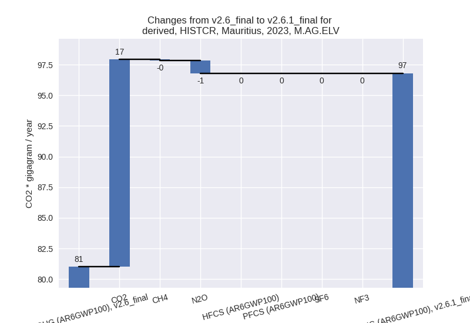

Changes in PRIMAP-hist v2.6.1_final compared to v2.6_final for Mauritius
2025-03-19
Johannes Gütschow
Change analysis for Mauritius for PRIMAP-hist v2.6.1_final compared to v2.6_final
Overview over emissions by sector and gas
The following figures show the aggregate national total emissions excluding LULUCF AR6GWP100 for the country reported priority scenario. The dotted linesshow the v2.6_final data.
The following figures show the aggregate national total emissions excluding LULUCF AR6GWP100 for the third party priority scenario. The dotted linesshow the v2.6_final data.
Overview over changes
In the country reported priority scenario we have the following changes for aggregate Kyoto GHG and national total emissions excluding LULUCF (M.0.EL):
- Emissions in 2023 have changed by 3.1%% (191.75 Gg CO2 / year)
- Emissions in 1990-2023 have changed by 0.9%% (38.91 Gg CO2 / year)
In the third party priority scenario we have the following changes for aggregate Kyoto GHG and national total emissions excluding LULUCF (M.0.EL):
- Emissions in 2023 have changed by -5.6%% (-389.90 Gg CO2 / year)
- Emissions in 1990-2023 have changed by -3.4%% (-159.75 Gg CO2 / year)
Most important changes per scenario and time frame
In the country reported priority scenario the following sector-gas combinations have the highest absolute impact on national total KyotoGHG (AR6GWP100) emissions in 2023 (top 5):
- 1: 1.A, CO2 with 143.42 Gg CO2 / year (3.2%)
- 2: 4, CH4 with 94.47 Gg CO2 / year (13.2%)
- 3: 2, HFCS (AR6GWP100) with -47.75 Gg CO2 / year (-7.3%)
- 4: 5, N2O with -47.15 Gg CO2 / year (-100.0%)
- 5: 2, CO2 with 27.25 Gg CO2 / year (314.5%)
In the country reported priority scenario the following sector-gas combinations have the highest absolute impact on national total KyotoGHG (AR6GWP100) emissions in 1990-2023 (top 5):
- 1: 1.A, CO2 with 72.17 Gg CO2 / year (2.4%)
- 2: 5, N2O with -44.97 Gg CO2 / year (-100.0%)
- 3: 2, HFCS (AR6GWP100) with -22.71 Gg CO2 / year (-10.1%)
- 4: 4, CH4 with 19.15 Gg CO2 / year (2.9%)
- 5: M.AG.ELV, CO2 with 14.06 Gg CO2 / year (inf%)
In the third party priority scenario the following sector-gas combinations have the highest absolute impact on national total KyotoGHG (AR6GWP100) emissions in 2023 (top 5):
- 1: 1.A, CO2 with -285.28 Gg CO2 / year (-6.2%)
- 2: 4, CH4 with -117.01 Gg CO2 / year (-19.0%)
- 3: 2, CO2 with 28.94 Gg CO2 / year (328.9%)
- 4: 2, HFCS (AR6GWP100) with -6.44 Gg CO2 / year (-0.4%)
- 5: 5, N2O with -5.74 Gg CO2 / year (-12.2%)
In the third party priority scenario the following sector-gas combinations have the highest absolute impact on national total KyotoGHG (AR6GWP100) emissions in 1990-2023 (top 5):
- 1: 4, CH4 with -109.04 Gg CO2 / year (-19.2%)
- 2: 1.A, CO2 with -39.97 Gg CO2 / year (-1.2%)
- 3: 5, N2O with -9.37 Gg CO2 / year (-20.8%)
- 4: 2, CO2 with 3.41 Gg CO2 / year (15.4%)
- 5: 2, HFCS (AR6GWP100) with -2.73 Gg CO2 / year (-0.5%)
Notes on data changes
Here we list notes explaining important emissions changes for the country.
- CRT, 2000-2022. Replaces and extends BUR1 and NIR data except for the agricultural sector (see below).
- The 2010 value for 1.A, CO2 is low in the CRT tables as all emission from solid fuels in the energy industries (1.A.1) are missing. We remove the faulty data point
- Agricultural data from BTR1 is not used because it contains several
errors.
- 3.A N2O is zero for many years, but non-zero for 2000 and post 2013. It is reported like this in the CRT files.
- CH4 emissions in 3.A are much lower in the CRT data than they should be according to the NID. This is likely due to data on cattle missing in the CRT files.
- in M.AG.ELV emissions for 2000 are much higher than for the other years. This is due to errors in the CRT data. For 2000 the activity data in used in the CRT data is twice the activity data listed in the NID for synthetic fertilizers, while the activity data for other 3.C.4.X sectors is much lower (and missing completely for other years.) For CH4 they are non-zero only for 2000 because it is the only year listing data for CRT sector 3.f field burning of agricultural residues which is marked “NO” for other years.
- There are small changes in the agricultural data in the CR time-series as we removed the downscaled NIR1 data which was only available as a M.0.EL aggregate Kyoto GHG time-series
- In the TP time-series the largest change in 2023 is for energy CO2 and comes from the CRT data as we have no third party energy CO2 data for Mauritius. This is also the reason for higher CO2 in 2.C post 2016 where CRT data replaces numerical extrapolation.
- Further changes come from EDGAR data for sectors 4 and 5 and small changes from other sectors.
Changes by sector and gas
For each scenario and time frame the changes are displayed for all individual sectors and all individual gases. In the sector plot we use aggregate Kyoto GHGs in AR6GWP100. In the gas plot we usenational total emissions without LULUCF.
country reported scenario
2023
1990-2023

third party scenario
2023
1990-2023
Detailed changes for the scenarios:
country reported scenario (HISTCR):
Most important changes per time frame
For 2023 the following sector-gas combinations have the highest absolute impact on national total KyotoGHG (AR6GWP100) emissions in 2023 (top 5):
- 1: 1.A, CO2 with 143.42 Gg CO2 / year (3.2%)
- 2: 4, CH4 with 94.47 Gg CO2 / year (13.2%)
- 3: 2, HFCS (AR6GWP100) with -47.75 Gg CO2 / year (-7.3%)
- 4: 5, N2O with -47.15 Gg CO2 / year (-100.0%)
- 5: 2, CO2 with 27.25 Gg CO2 / year (314.5%)
For 1990-2023 the following sector-gas combinations have the highest absolute impact on national total KyotoGHG (AR6GWP100) emissions in 1990-2023 (top 5):
- 1: 1.A, CO2 with 72.17 Gg CO2 / year (2.4%)
- 2: 5, N2O with -44.97 Gg CO2 / year (-100.0%)
- 3: 2, HFCS (AR6GWP100) with -22.71 Gg CO2 / year (-10.1%)
- 4: 4, CH4 with 19.15 Gg CO2 / year (2.9%)
- 5: M.AG.ELV, CO2 with 14.06 Gg CO2 / year (inf%)
Changes in the main sectors for aggregate KyotoGHG (AR6GWP100) are
- 1: Total sectoral emissions in 2022 are 4486.57 Gg
CO2 / year which is 73.8% of M.0.EL emissions. 2023 Emissions have
changed by 3.3% (150.47 Gg CO2 /
year). 1990-2023 Emissions have changed by 2.4% (72.78 Gg CO2 / year). For 2023 the
changes per gas
are:
For 1990-2023 the changes per gas are:
The changes come from the following subsectors:- 1.A: Total sectoral emissions in 2022 are 4486.57
Gg CO2 / year which is 100.0% of category 1 emissions. 2023 Emissions
have changed by 3.3% (151.39 Gg CO2
/ year). 1990-2023 Emissions have changed by 2.5% (76.02 Gg CO2 / year). For 2023 the
changes per gas
are:
For 1990-2023 the changes per gas are:
There is no subsector information available in PRIMAP-hist. - 1.B.1: Total sectoral emissions in 2022 are 0.00 Gg
CO2 / year which is 0.0% of category 1 emissions. 2023 Emissions have
changed by -100.0% (-0.92 Gg CO2 /
year). 1990-2023 Emissions have changed by -100.0% (-3.24 Gg CO2 / year). For 2023
the changes per gas
are:
For 1990-2023 the changes per gas are:
There is no subsector information available in PRIMAP-hist.
- 1.A: Total sectoral emissions in 2022 are 4486.57
Gg CO2 / year which is 100.0% of category 1 emissions. 2023 Emissions
have changed by 3.3% (151.39 Gg CO2
/ year). 1990-2023 Emissions have changed by 2.5% (76.02 Gg CO2 / year). For 2023 the
changes per gas
are:
- 2: Total sectoral emissions in 2022 are 613.26 Gg
CO2 / year which is 10.1% of M.0.EL emissions. 2023 Emissions have
changed by -3.1% (-20.51 Gg CO2 /
year). 1990-2023 Emissions have changed by -8.6% (-21.16 Gg CO2 / year). For 2023 the
changes per gas
are:
For 1990-2023 the changes per gas are: - M.AG: Total sectoral emissions in 2022 are 150.98
Gg CO2 / year which is 2.5% of M.0.EL emissions. 2023 Emissions have
changed by 9.4% (12.92 Gg CO2 /
year). 1990-2023 Emissions have changed by 9.3% (13.27 Gg CO2 / year). For 2023 the
changes per gas
are:
For 1990-2023 the changes per gas are:
The changes come from the following subsectors:- 3.A: Total sectoral emissions in 2022 are 53.14 Gg
CO2 / year which is 35.2% of category M.AG emissions. 2023 Emissions
have changed by -5.1% (-2.88 Gg CO2
/ year). 1990-2023 Emissions have changed by -0.2% (-0.08 Gg CO2 / year). For 2023 the
changes per gas
are:
There is no subsector information available in PRIMAP-hist. - M.AG.ELV: Total sectoral emissions in 2022 are
97.84 Gg CO2 / year which is 64.8% of category M.AG emissions. 2023
Emissions have changed by 19.5%
(15.80 Gg CO2 / year). 1990-2023 Emissions have changed by 14.8% (13.36 Gg CO2 / year). For 2023 the
changes per gas
are:

For 1990-2023 the changes per gas are:
There is no subsector information available in PRIMAP-hist.
- 3.A: Total sectoral emissions in 2022 are 53.14 Gg
CO2 / year which is 35.2% of category M.AG emissions. 2023 Emissions
have changed by -5.1% (-2.88 Gg CO2
/ year). 1990-2023 Emissions have changed by -0.2% (-0.08 Gg CO2 / year). For 2023 the
changes per gas
are:
- 4: Total sectoral emissions in 2022 are 829.77 Gg
CO2 / year which is 13.6% of M.0.EL emissions. 2023 Emissions have
changed by 13.0% (96.01 Gg CO2 /
year). 1990-2023 Emissions have changed by 2.8% (18.98 Gg CO2 / year). For 2023 the
changes per gas
are:
For 1990-2023 the changes per gas are: - 5: Total sectoral emissions in 2022 are 0.00 Gg CO2
/ year which is 0.0% of M.0.EL emissions. 2023 Emissions have changed by
-100.0% (-47.15 Gg CO2 / year).
1990-2023 Emissions have changed by -100.0% (-44.97 Gg CO2 / year). For 2023
the changes per gas
are:
For 1990-2023 the changes per gas are:
third party scenario (HISTTP):
Most important changes per time frame
For 2023 the following sector-gas combinations have the highest absolute impact on national total KyotoGHG (AR6GWP100) emissions in 2023 (top 5):
- 1: 1.A, CO2 with -285.28 Gg CO2 / year (-6.2%)
- 2: 4, CH4 with -117.01 Gg CO2 / year (-19.0%)
- 3: 2, CO2 with 28.94 Gg CO2 / year (328.9%)
- 4: 2, HFCS (AR6GWP100) with -6.44 Gg CO2 / year (-0.4%)
- 5: 5, N2O with -5.74 Gg CO2 / year (-12.2%)
For 1990-2023 the following sector-gas combinations have the highest absolute impact on national total KyotoGHG (AR6GWP100) emissions in 1990-2023 (top 5):
- 1: 4, CH4 with -109.04 Gg CO2 / year (-19.2%)
- 2: 1.A, CO2 with -39.97 Gg CO2 / year (-1.2%)
- 3: 5, N2O with -9.37 Gg CO2 / year (-20.8%)
- 4: 2, CO2 with 3.41 Gg CO2 / year (15.4%)
- 5: 2, HFCS (AR6GWP100) with -2.73 Gg CO2 / year (-0.5%)
Changes in the main sectors for aggregate KyotoGHG (AR6GWP100) are
- 1: Total sectoral emissions in 2022 are 4050.00 Gg
CO2 / year which is 65.1% of M.0.EL emissions. 2023 Emissions have
changed by -6.2% (-286.86 Gg CO2 /
year). 1990-2023 Emissions have changed by -1.2% (-40.86 Gg CO2 / year). For 2023 the
changes per gas
are:
The changes come from the following subsectors:- 1.A: Total sectoral emissions in 2022 are 4049.28
Gg CO2 / year which is 100.0% of category 1 emissions. 2023 Emissions
have changed by -6.2% (-286.65 Gg
CO2 / year). 1990-2023 Emissions have changed by -1.2% (-40.84 Gg CO2 / year). For 2023 the
changes per gas
are:

There is no subsector information available in PRIMAP-hist. - 1.B.1: Total sectoral emissions in 2022 are 0.71 Gg
CO2 / year which is 0.0% of category 1 emissions. 2023 Emissions have
changed by -22.7% (-0.21 Gg CO2 /
year). 1990-2023 Emissions have changed by -0.7% (-0.02 Gg CO2 / year). For 2023 the
changes per gas
are:
There is no subsector information available in PRIMAP-hist.
- 1.A: Total sectoral emissions in 2022 are 4049.28
Gg CO2 / year which is 100.0% of category 1 emissions. 2023 Emissions
have changed by -6.2% (-286.65 Gg
CO2 / year). 1990-2023 Emissions have changed by -1.2% (-40.84 Gg CO2 / year). For 2023 the
changes per gas
are:
- 2: Total sectoral emissions in 2022 are 1467.56 Gg CO2 / year which is 23.6% of M.0.EL emissions. 2023 Emissions have changed by 1.5% (22.50 Gg CO2 / year). 1990-2023 Emissions have changed by 0.1% (0.68 Gg CO2 / year).
- M.AG: Total sectoral emissions in 2022 are 141.61
Gg CO2 / year which is 2.3% of M.0.EL emissions. 2023 Emissions have
changed by -2.4% (-3.46 Gg CO2 /
year). 1990-2023 Emissions have changed by -0.8% (-1.22 Gg CO2 / year). For 2023 the
changes per gas
are:
The changes come from the following subsectors:- 3.A: Total sectoral emissions in 2022 are 23.91 Gg
CO2 / year which is 16.9% of category M.AG emissions. 2023 Emissions
have changed by -6.5% (-1.67 Gg CO2
/ year). 1990-2023 Emissions have changed by -0.4% (-0.12 Gg CO2 / year). For 2023 the
changes per gas
are:

There is no subsector information available in PRIMAP-hist. - M.AG.ELV: Total sectoral emissions in 2022 are 117.70 Gg CO2 / year which is 83.1% of category M.AG emissions. 2023 Emissions have changed by -1.5% (-1.79 Gg CO2 / year). 1990-2023 Emissions have changed by -0.9% (-1.10 Gg CO2 / year).
- 3.A: Total sectoral emissions in 2022 are 23.91 Gg
CO2 / year which is 16.9% of category M.AG emissions. 2023 Emissions
have changed by -6.5% (-1.67 Gg CO2
/ year). 1990-2023 Emissions have changed by -0.4% (-0.12 Gg CO2 / year). For 2023 the
changes per gas
are:
- 4: Total sectoral emissions in 2022 are 516.88 Gg
CO2 / year which is 8.3% of M.0.EL emissions. 2023 Emissions have
changed by -18.3% (-116.34 Gg CO2 /
year). 1990-2023 Emissions have changed by -18.6% (-108.97 Gg CO2 / year). For 2023
the changes per gas
are:
For 1990-2023 the changes per gas are: - 5: Total sectoral emissions in 2022 are 40.72 Gg
CO2 / year which is 0.7% of M.0.EL emissions. 2023 Emissions have
changed by -12.2% (-5.74 Gg CO2 /
year). 1990-2023 Emissions have changed by -20.8% (-9.37 Gg CO2 / year). For 2023 the
changes per gas
are:
For 1990-2023 the changes per gas are: